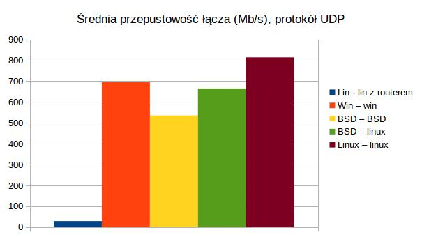

Iperf
Wstęp
Test za pomocą programu Iperf mierzy przepustowość pomiędzy dwoma hostami w sieci.
Procedura testowa
Program Iperf uruchamiany jest na dwóch hostach, pomiędzy którymi testowane jest połączenie. Host1 uruchamia Iperf w trybie klienta, host2 w trybie serwera. Host1 wysyła do hosta2 dane przez 30 sekund. Mierzona jest przepustowość łącza. Test wykonywany jest dla 3 systemów operacyjnych: Linux, Windows i BSD dla protokołów TCP i UDP.
Linux - Linux z routerem pośredniczącym
Tabela - wyniki ogólne
| Przepustowość (Mb/s) UDP | |
|---|---|
| Średnia arytmetyczna | 28,70 |
| Odchylenie standardowe | 2,02 |
| Wartość maksymalna | 30,01 |
| Wartość minimalna | 26,1 |
Tabela - wyniki szczegółowe
| Przepustowość (Mb/s) UDP | |
|---|---|
| labc192 - aleks-2 | 26,1 |
| labc194 - aleks-2 | 26,1 |
| labc195 - aleks-2 | 30,01 |
| labc195 - aleks-2 | 30 |
| labc197 - aleks-2 | 30 |
| labc198 - aleks-2 | 30 |
| labc199 - aleks-2 | 30 |
Podsumowanie
Najlepszy wynik osiągnął host labc195, najgorsze wyniki osiągnęły hosty labc192 i labc194
Windows - Windows
Tabela - wyniki ogólne
| Przepustowość (Mb/s) UDP | |
|---|---|
| Średnia arytmetyczna | 695,33 |
| Odchylenie standardowe | 153,81 |
| Wartość maksymalna | 806 |
| Wartość minimalna | 493 |
Tabela - wyniki szczegółowe
| Przepustowość (Mb/s) UDP | |
|---|---|
| labc192 – labc193 | 493 |
| labc194 – labc195 | 806 |
| labc195 – labc194 | 793 |
| labc197 – labc199 | 784 |
| labc198 – labc199 | 795 |
| labc199 – labc198 | 501 |
Podsumowanie
Najlepszy wynik osiągnął host labc194, najgorszy - labc192.
BSD - BSD
Tabela - wyniki ogólne
| Przepustowość (Mb/s) TCP | Przepustowość (Mb/s) UDP | |
|---|---|---|
| Średnia arytmetyczna | 637,35 | 553,5 |
| Odchylenie standardowe | 291,05 | 128,70 |
| Wartość maksymalna | 883 | 687 |
| Wartość minimalna | 94,1 | 365 |
Tabela - wyniki szczegółowe
| Przepustowość (Mb/s) TCP | Przepustowość (Mb/s) UDP | |
|---|---|---|
| labc193 – labc194 | 628 | 521 |
| labc194 - labc193 | 585 | 687 |
| labc195 – labc194 | 94,1 | 673 |
| labc197 – labc192 | 798 | 365 |
| labc199 – labc198 | 883 | 836 |
| labc198 – labc199 | 836 | 620 |
Podsumowanie
Dla protokołu TCP najlepszy wynik osiągnąła para hostów labc193 - labc198, najgorszy - labc195 - labc194. Dla protokołu UDP najlepszy wynik osiągnąła para hostów labc194 - labc194, najgorszy - labc197 - labc192.
BSD - Linux
Tabela - wyniki ogólne
| Przepustowość (Mb/s) TCP | Przepustowość (Mb/s) UDP | |
|---|---|---|
| Średnia arytmetyczna | 843,17 | 664,83 |
| Odchylenie standardowe | 67,39 | 174,89 |
| Wartość maksymalna | 923 | 814 |
| Wartość minimalna | 764 | 320 |
Tabela - wyniki szczegółowe
| Przepustowość (Mb/s) TCP | Przepustowość (Mb/s) UDP | |
|---|---|---|
| labc192 - labc197 | 923 | 320 |
| labc193 - labc194 | 764 | 726 |
| labc194 – labc193 | 820 | 677 |
| labc197 - labc192 | 923 | 814 |
| labc198 – labc199 | 842 | 712 |
| labc199 – labc198 | 787 | 740 |
Podsumowanie
Dla protokołu TCP najlepszy wynik osiągnąły pary hostów labc192 - labc197 i labc197 - labc192, najgorszy: labc193 - labc194. Dla protokołu UDP najlepszy wynik osiągnąła para hostów labc197 - labc192, najgorszy: labc197 - labc197.
Linux - Linux
Tabela - wyniki ogólne
| Przepustowość (Mb/s) TCP | Przepustowość (Mb/s) UDP | |
|---|---|---|
| Średnia arytmetyczna | 933 | 814 |
| Odchylenie standardowe | 0 | 0 |
| Wartość maksymalna | 933 | 814 |
| Wartość minimalna | 933 | 814 |
Tabela - wyniki szczegółowe
| Przepustowość (Mb/s) TCP | Przepustowość (Mb/s) UDP | |
|---|---|---|
| labc192 – labc193 | 933 | 814 |
| labc193 – labc192 | 933 | 814 |
| labc194 – labc195 | 933 | 814 |
| labc195 – labc194 | 933 | 814 |
| labc197 – labc192 | 933 | 814 |
| labc198 – labc199 | 933 | 814 |
| labc199 – labc198 | 933 | 814 |
Podsumowanie kilku systemów
Wykres

Opis
Najnizszą przepustowość wykazało połączenie pomiędzy hostami z systemami linux, w różnych sieciach. Najwyższą hosty z systemem Linux w tej samej sieci.
Mtr
Wstęp
Test za pomocą programu mtr mierzy czas odpowiedzi serwera kernel.org
Procedura testowa
Program mtr wysyła do serwera 10 pakietów i mierzy średni czas odpowiedzi serwera.
Raport dla systemu Linux
Tabela - wyniki ogólne
| średni czas odpowiedzi serwera (ms) | |
|---|---|
| Średnia arytmetyczna | 153,62 |
| Odchylenie standardowe | 28,92 |
| Wartość maksymalna | 111,4 |
| Wartość minimalna | 174,8 |
Tabela - wyniki szczegółowe
| średni czas odpowiedzi serwera (ms) | |
|---|---|
| labc192 | 111,4 |
| labc193 | 169,9 |
| labc194 | 168,3 |
| labc195 | 169,9 |
| labc197 | 174,8 |
| labc198 | 169,7 |
| labc199 | 111,4 |
Podsumowanie
Najlepszy wynik osiągnęły hosty labc192 i labc 199, najgorszy labc197